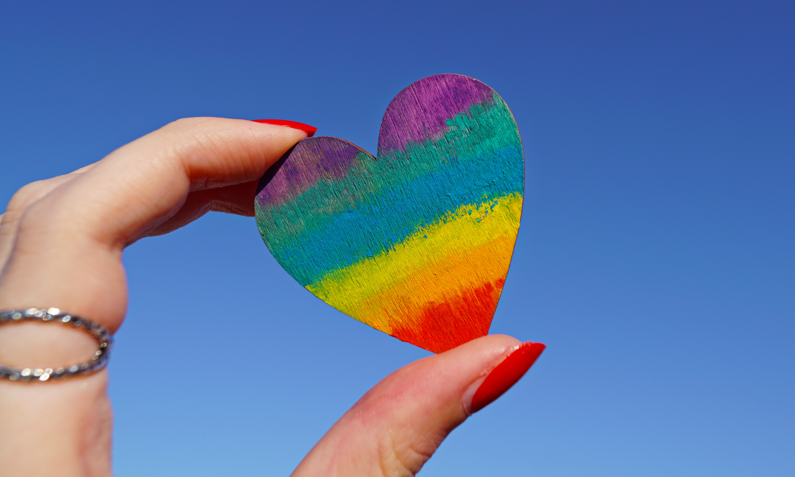

The Power of love
Love is like trying to assemble a piece of IKEA furniture without any instructions or a single Allen wrench. You start with all these mismatched parts and a vague idea of what the finished product should look like. You fumble around, cursing under your breath as you try to fit a square peg into a round hole. And just when you think you've got it all figured out, you realize you've accidentally assembled a bookshelf instead of a bed. Love is confusing, my friend, but hey, at least you'll have a place to store all those relationship self-help books.
They say love is blind, but I think it's more like love is visually impaired and wearing a pair of dollar store reading glasses. It stumbles around, knocking over priceless vases and stepping on your favorite pair of shoes. Love thinks it's being all smooth and suave, but it can't even see that it's got spinach stuck in its teeth or that its shoelaces are untied. But hey, you can't help but laugh at love's clumsy antics because, in the end, it's just trying its best to make you smile (and occasionally break something valuable).
Love is like a roller coaster ride, except instead of twists and turns, it's just a constant loop of emotions. One moment, you're on top of the world, screaming with joy as you fly through the air. The next moment, you're plummeting down, screaming in terror and questioning all your life choices. And just when you think the ride is over and you can finally catch your breath, love hits you with another loop-de-loop, leaving your stomach in knots and your heart in your throat. You can't help but wonder if you should have packed a barf bag instead of a box of chocolates.
Love is like trying to navigate through a maze while wearing a blindfold and a pair of socks on a slippery floor. You take one step forward, confident in your path, and suddenly you find yourself face-first in a wall. You pick yourself up, dust off your ego, and try a different direction, only to discover that you've been going in circles the whole time. Love delights in throwing unexpected obstacles in your way, like a random banana peel or a strategically placed pile of dog poop. But hey, at least you'll have some hilarious stories to tell your friends once you finally find your way out.
Love is like a game show where the rules are constantly changing, and the host is a mischievous trickster. You think you've got it all figured out, answering questions with confidence and earning some points along the way. But just when you think you're about to win the grand prize, the host throws a curveball and asks a question about quantum physics or the mating habits of fruit flies. Suddenly, you're left scratching your head and wondering why you didn't study harder for this unpredictable game. Love keeps you on your toes, and if you can't handle the occasional humiliation, well, at least you'll have some great material for your future stand-up comedy career.